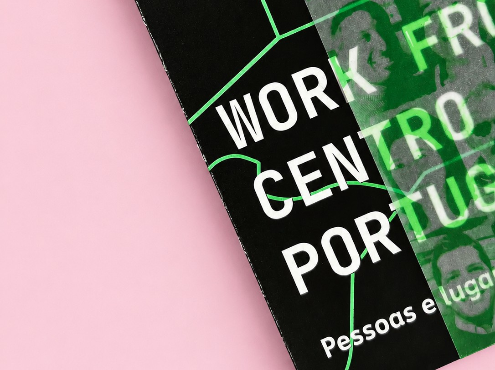
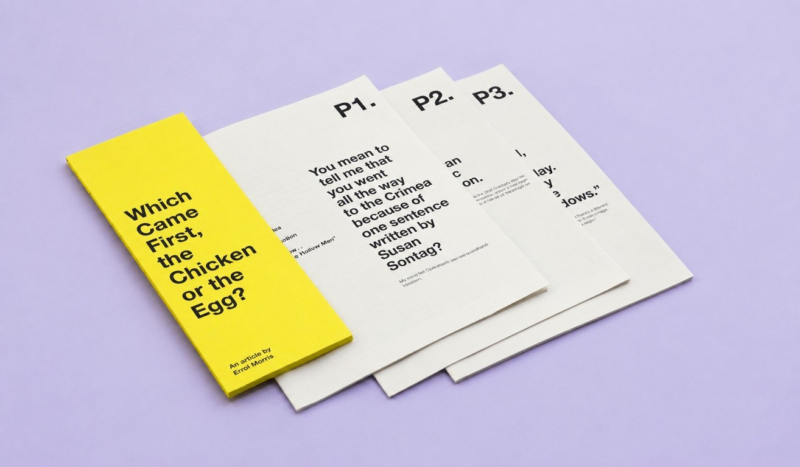
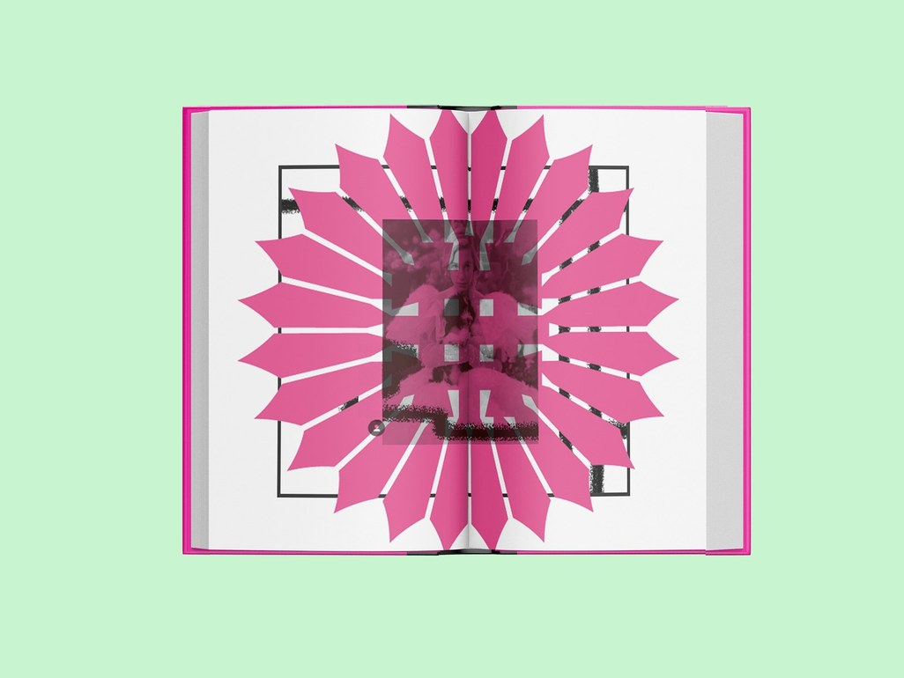
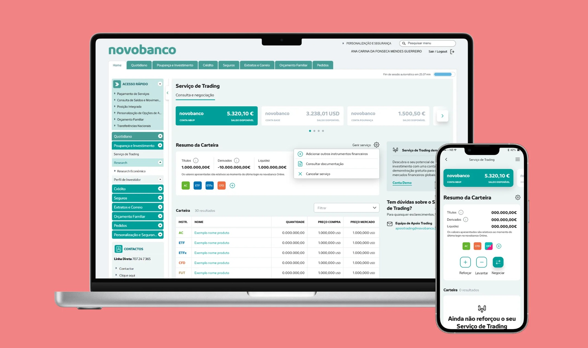
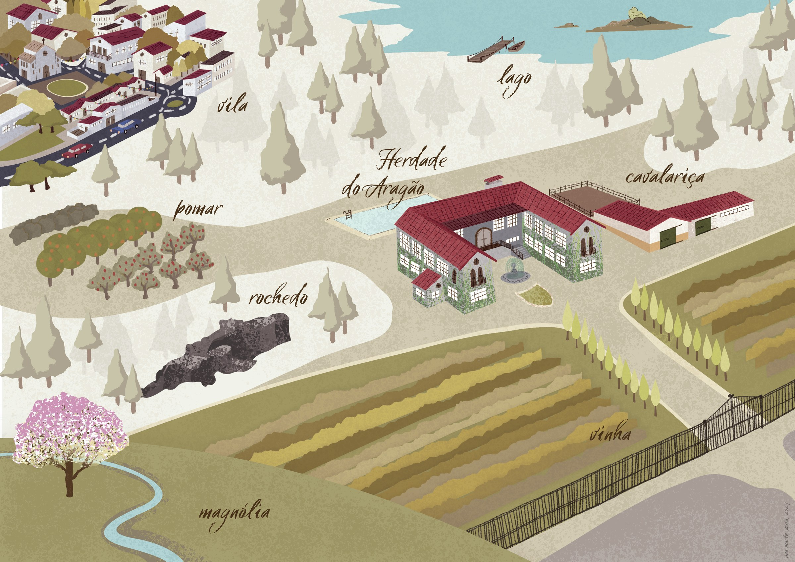
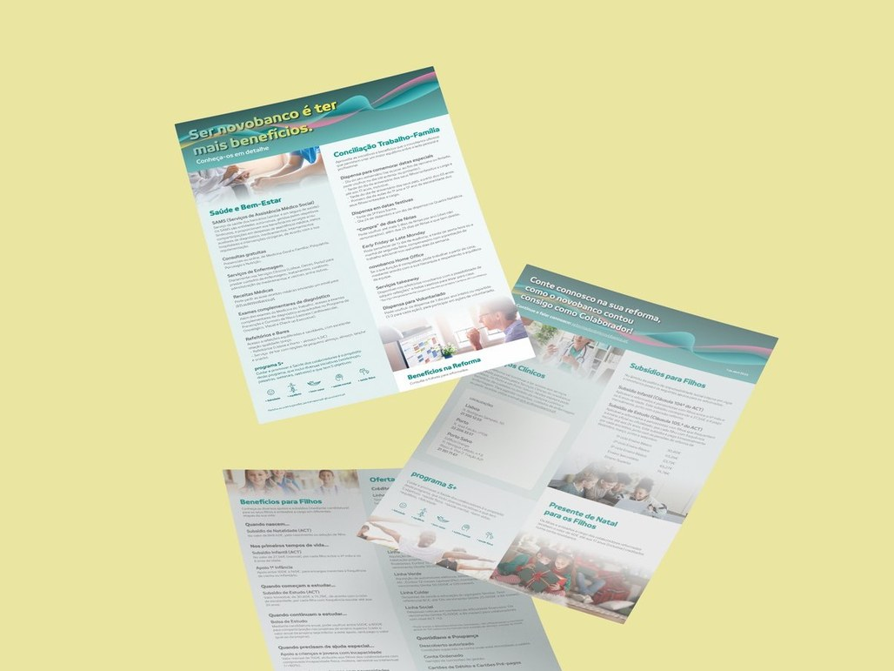
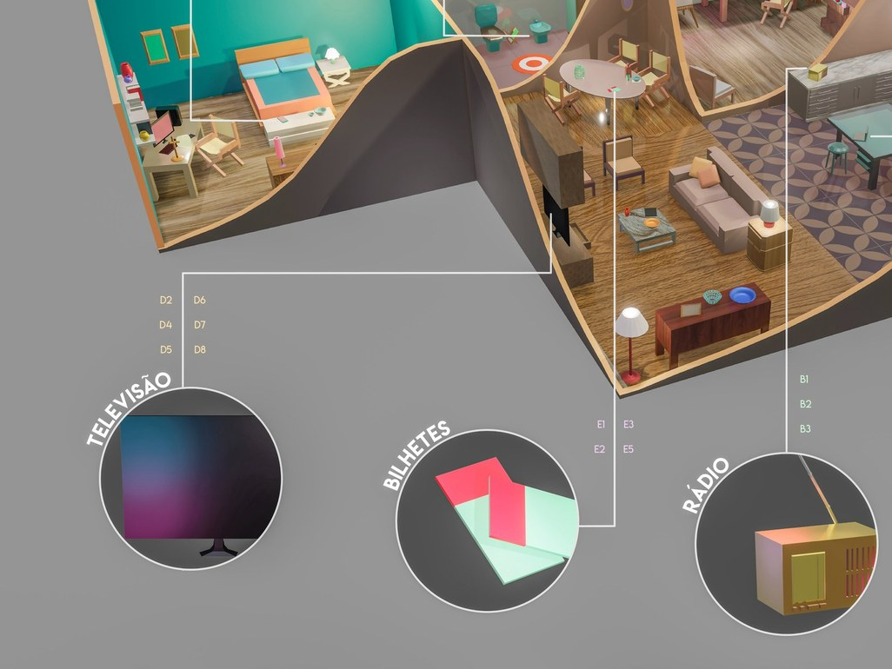
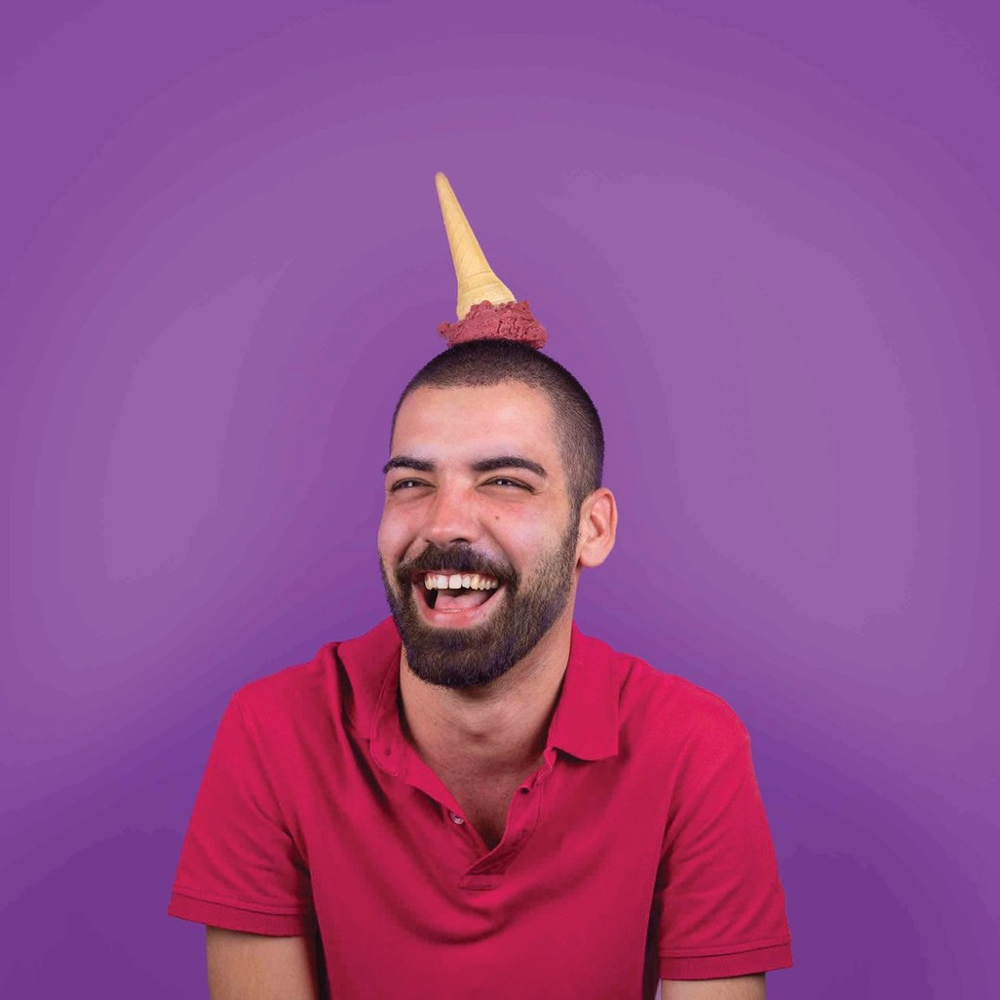

Marta Sousa — selected work
I’m marta, a communication designer in Lisbon. I design identities, books, illustrations and data visualisations, and I like making complicated things clear and accessible.
-

Brand identity · Editorial · Digital “Work from Centro” Studio work · Tipo-Grafia -

Editorial design “Which came first?” University project · FBAUP -
 BOOK design
“Barn Burning”
Personal project
BOOK design
“Barn Burning”
Personal project
-

Editorial design Screenshots album University project · FBAUP -

UI design Banking interfaces In-house · Novobanco -

Illustration Selected illustration University projects & commissions -

Institutional communication Leaflets and newsletters In-house · Novobanco -

Data visualisation Infographic posters University projects · FBAUP -

Social & art direction · Illustration Brand communication Studio work · Tipo-Grafia